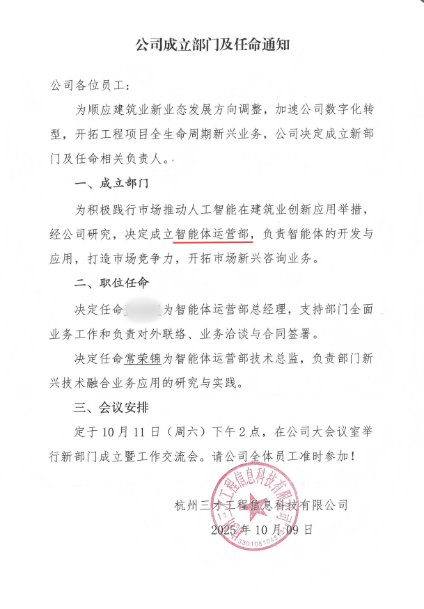
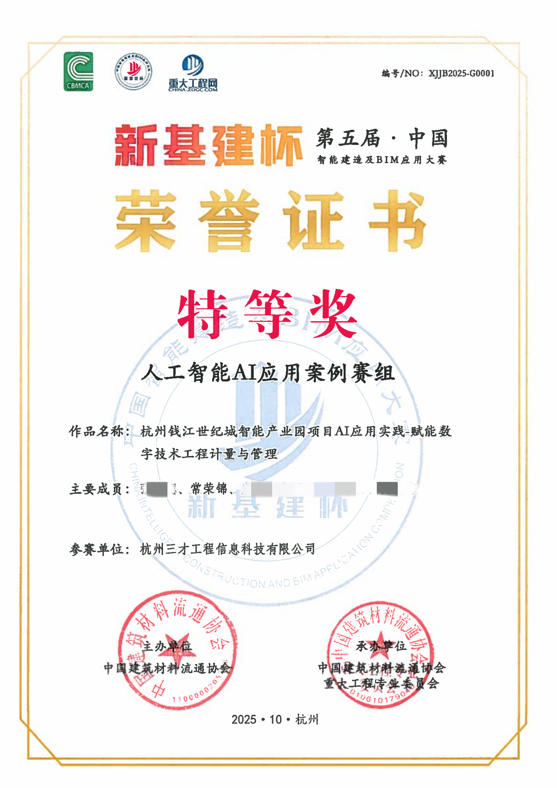
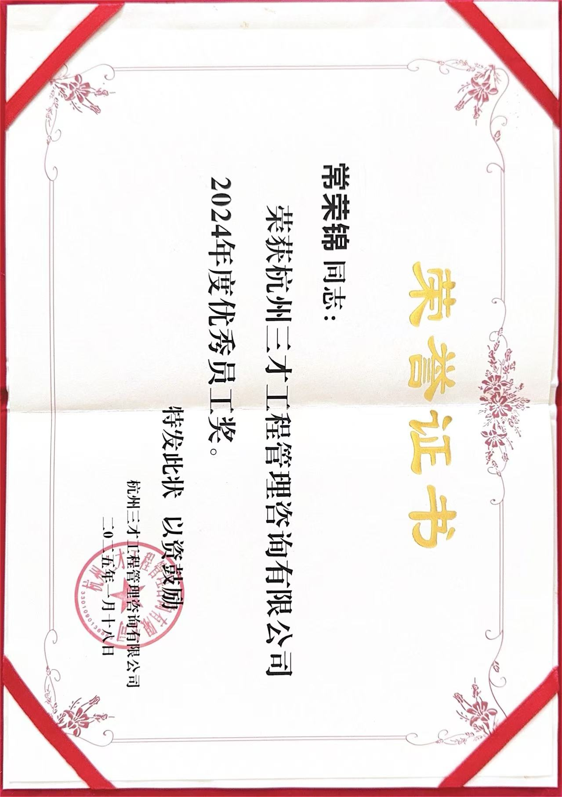
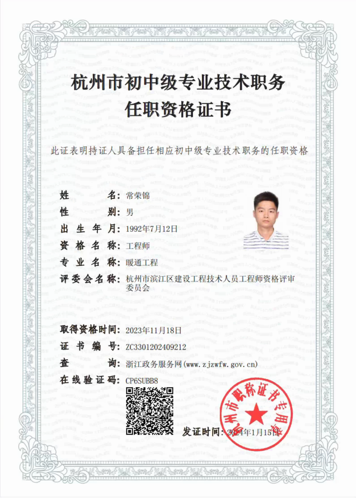
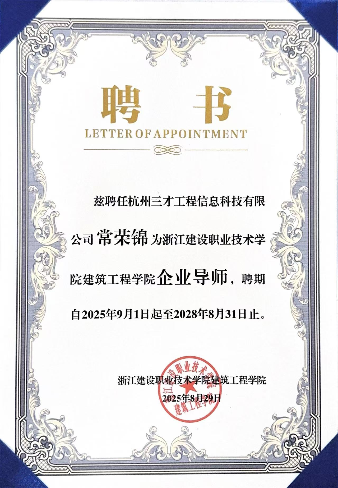
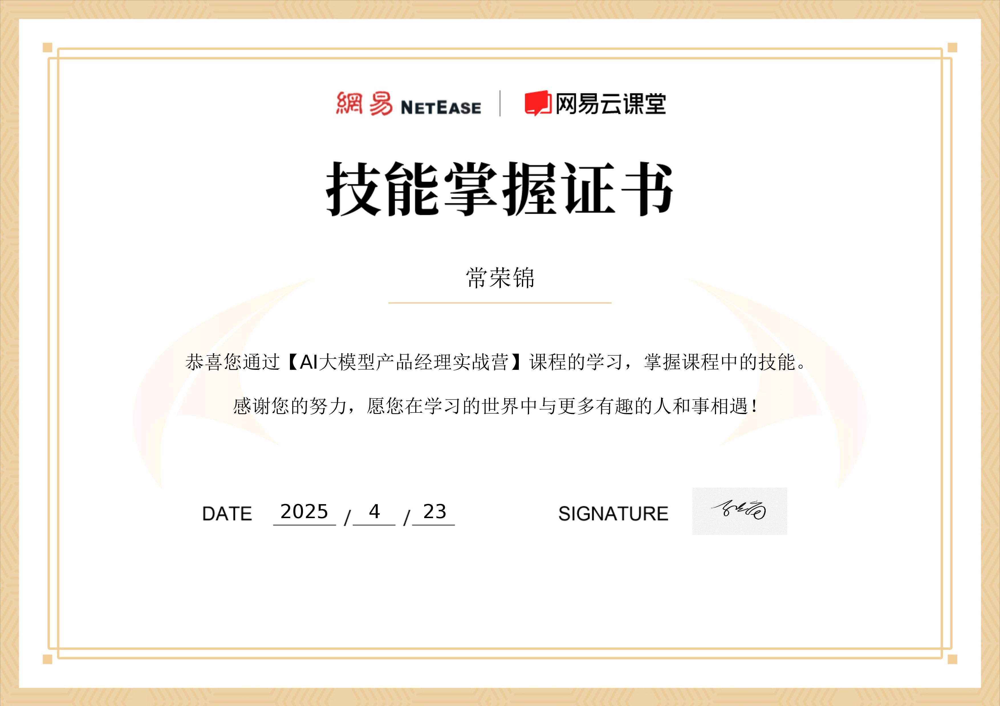
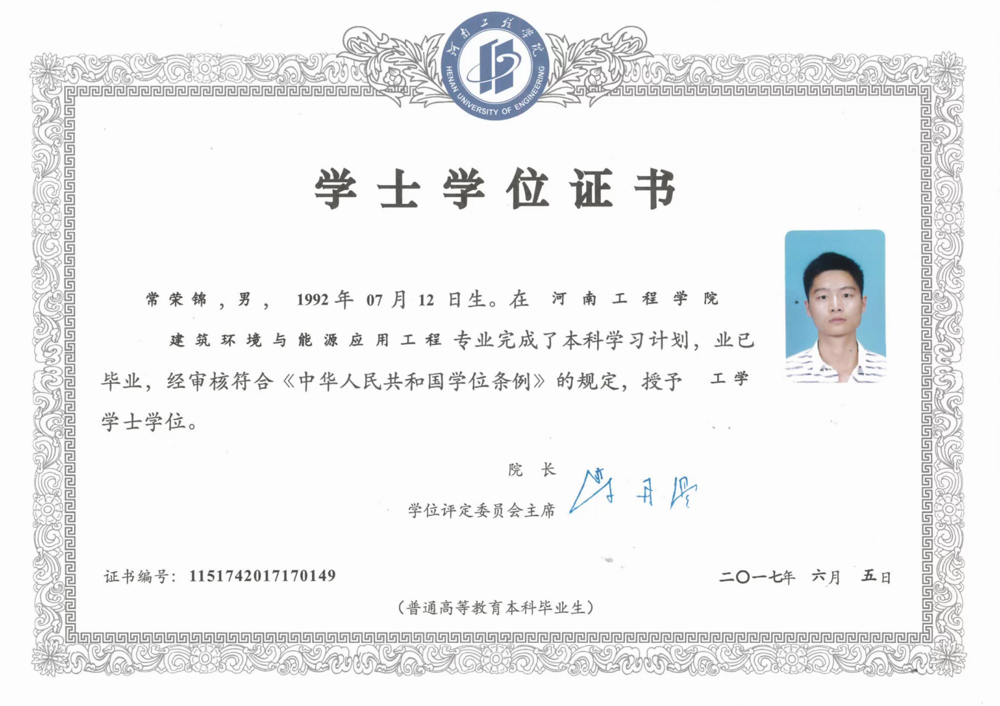

常荣锦
求职意向：AI产品经理 / Agent应用开发工程师 / AI解决方案专家
男 32岁
16657112303
changrongjin2303@gmail.com
杭州 钱塘区

个人优势
AI编程效能专家
熟练掌握Cursor、Trae、Claude CLI、GPT CLI等前沿AI编程工具，具备人机协作的极速开发能力，能高效交付高质量应用系统。对AI技术边界保持敏锐探索，致力于用技术创新提升生产力。
AI落地实战派
具备“产品设计+代码开发+部署上线”全链路能力的复合型人才。独立开发并上线企业级《AI材料价格分析系统》，精通RAG检索增强生成、Agent智能体工作流设计及前后端开发。
复合型人才
8年复杂工程项目管理经验，转型为智能体运营部技术总监。擅长深入垂直行业场景，将模糊的业务痛点转化为可落地的AI解决方案。
权威背书与学习力
浙江建设职业技术学院特聘“AI赋能建筑业”企业导师。具备极强的自驱力，积极探索学习，能快速掌握新技术并应用于实际生产。
专业技能
AI技术栈
熟悉LLM应用开发（DeepSeek/Qwen/Doubao API调用）、Prompt Engineering、RAG架构搭建、LangChain/AutoGPT原理；熟悉AI Agent工作流编排
全栈开发
能够独立完成Web端系统开发（前端React/Vue + 后端Python/Node.js + 数据库），具备系统部署上线能力。
产品能力
擅长深入业务一线挖掘用户真实痛点，通过需求调研与数据分析识别核心问题，运用AI技术（RAG、Agent工作流）设计针对性解决方案。
通用能力
擅长跨部门资源协调与利益相关方沟通。具备很强的学习能力与问题解决能力，能快速适应新技术栈并应用于实际业务场景，推动团队技术创新与流程优化。
核心项目经历
企业级材料价格AI智能分析系统
全栈独立开发角色：产品经理 & 全栈开发工程师
背景：针对传统采购询价环节中数据非结构化、比价耗时、风险识别难的痛点，开发的一站式AI分析平台。
产品设计
- 设计了从“非结构化清单导入”到“自动比价报告生成”的自动化闭环流程。
- 构建了基于OCR+NLP的智能解析模块，解决了Excel/图片清单格式混乱的难题。
- 规划了“风险等级分布”与“核增减额TOP10”可视化看板，辅助管理层决策。
技术实现
- Agent工作流：设计多智能体协作模式，分别负责“数据清洗”、“市价检索匹配”、“异常值判定”和“报告生成”。
- RAG应用：搭建私有化材料价格知识库，利用向量检索技术实现送审材料与信息价的高精度匹配。
- 全栈落地：独立完成前后端代码编写及服务器部署，系统包含项目管理、价格查询、智能分析报告导出等完整功能模块。
基于视觉大模型(LLM)的智能财务单据自动化系统
独立开发技术栈：Python, Streamlit, Vision LLM, Pandas, PyMuPDF, OpenPyXL, Prompt Engineering
项目描述：针对财务部门处理大量非结构化单据（发票PDF、合同扫描件、OA截图）效率低、易出错的问题，独立开发了一套端到端的自动化处理系统。系统利用大模型视觉能力提取关键信息，并自动清洗、校验数据，最终生成符合财务ERP要求的标准报表。
咨询报告AI生成助手
全栈独立开发角色：产品经理 & 全栈开发工程师
背景：针对传统造价咨询报告编制中数据录入繁琐、文档解析困难、审核周期长的痛点，开发的一站式AI辅助报告生成平台。
产品设计
- 设计了从"非结构化文件上传"到"智能信息提取"再到"标准报告生成"的全自动化闭环流程。
- 构建了21类工程文件分类管理体系，支持PDF/Word/图片等多格式文档智能识别和归档。
- 规划了"AI智能提取"与"人工校验"相结合的双重质控机制，确保数据准确性和报告合规性。
技术实现
- AI工作流设计：规划多智能体协作模式，分别负责"OCR识别"、"信息提取"、"数据校验"和"报告生成"四大环节。
- 模板引擎技术：基于docxtpl+Jinja2实现Word模板动态渲染，解决了复杂表格、金额中文大写、悬挂缩进等格式化难题。
- 全栈落地：独立完成前后端代码编写及Docker容器化部署，系统包含用户认证、项目管理、文件上传、智能提取、报告导出等完整功能模块。
工作经历
2025.10 - 至今
杭州三才工程信息科技有限公司 | 智能体运营部 · 技术总监
- 从0到1组建：共同组建公司“智能体运营部”，负责公司新兴业务的开拓与技术底座搭建，以及部门日常管理与团队建设。
- 战略规划：主导“AI+建筑工程造价”技术路线图制定，负责AI Agent在实际工程管理场景中的创新应用研究（如自动化合同合规检查、AI+BIM辅助编制工程量清单等）。
- 对外合作：负责技术方案的对外联络与业务洽谈，推动AI解决方案在行业内的商业化落地。

任命通知书
2018.12 - 2025.05
杭州三才工程管理咨询有限公司 | BIM高级工程师 / 数字化项目负责人
- 数字化转型：荣获2024年度优秀员工奖。长期负责大型复杂项目（涵盖商业综合体、医院、工业厂房）的BIM咨询与数字化管理。
- 数据治理：负责超过120万平米建筑面积的数字资产管理，积累了深厚的数据标准化与清洗经验（为后续AI训练奠定数据基础）。
- 技术创新：曾参与获得“新基建杯”人工智能AI应用案例赛组特等奖、“龙图杯”全国BIM大赛二等奖、优秀奖等奖项，擅长利用技术手段优化工作流，解决复杂工程问题。
- 中级工程师：于2023年取得中级工程师职称，具备扎实的工程技术理论基础与丰富的实践经验。

AI应用案例特等奖

年度优秀员工奖

中级工程师证书
龙图杯二等奖
2020.08 - 2021.06
上海妇幼保健院奉贤院区项目 (鲁班奖项目) | BIM机电工程师
- 参与高难度医疗专项系统优化设计，负责驻场协调与数字化施工指导，确保项目达到国家级质量奖项标准。
教育与认证
浙江建设职业技术学院 | 特聘企业导师
2025.09 - 2028.08受聘方向：AI赋能建筑业。负责指导学生进行AI技术在工程领域的创新实践。

网易云课堂 | AI大模型产品经理实战营
2025.04系统掌握大模型商业化落地方法论、Prompt设计及Agent应用架构。

河南工程学院 | 建筑环境与能源应用工程
2013 - 2017本科学士 | 荣誉：最佳毕业生设计荣誉、国际标准舞协会教练
